Six Safety Layers

Each layer is enforced on the server. A request that clears all six runs as the Odoo user, is journaled and is logged.
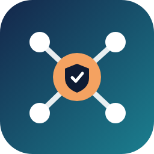
AXSync | Odoo 19.0 | Extra Tools
Turn your Odoo into a Model Context Protocol server. Assistants can search, analyse and update your data under rules you control: read-only by default, sensitive fields masked, risky actions held for a second person, every change reversible and every call logged.
Value in one line: you get the speed of an AI assistant without handing it an admin login.
Odoo 19.0 23 tools OAuth 2.1 No extra Python libraries
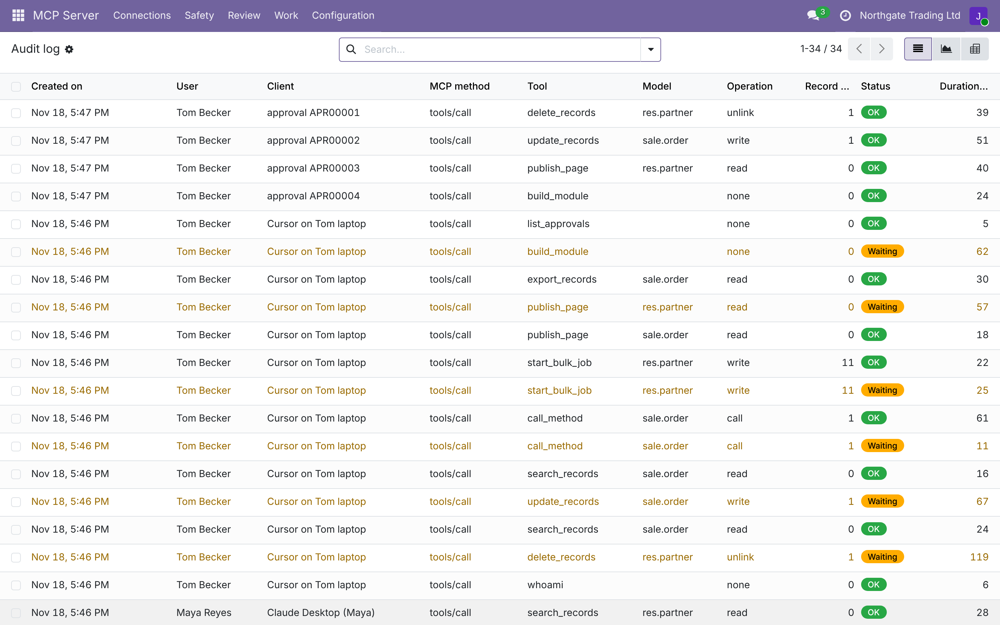
The audit log on Odoo 19.0. Demo data for a fictional company; users and clients are fictional.
Most AI connectors for ERP data have one setting: connected or not. That is fine for a demo and risky for a company. A small slip in a prompt can archive customers or rewrite prices, and afterwards nobody can tell what ran.
MCP Server for Odoo adds the missing control layer. An administrator decides which models and tools each connection may touch, which actions need a person to agree, which fields the assistant never sees, and how long records of what happened are kept. The assistant always works as a real Odoo user, so Odoo access rights and record rules still apply on top.
Giving an assistant an admin login or raw SQL is the fastest way to a bad Monday. You need a front door with rules.
Most connectors let the model write immediately. Deletes, large edits and method calls should wait for a person.
Tax numbers, phones and emails end up in a model context and in a vendor log unless they are masked at the source.
When a record is wrong, you need to know who asked, which tool ran, with which arguments, and you need an undo.
Pasting long-lived tokens into a web app is not acceptable. They need OAuth, consent and revocation.
Sales may update contacts, finance may read invoices, the auditor may read and nothing else. One switch for all does not work.
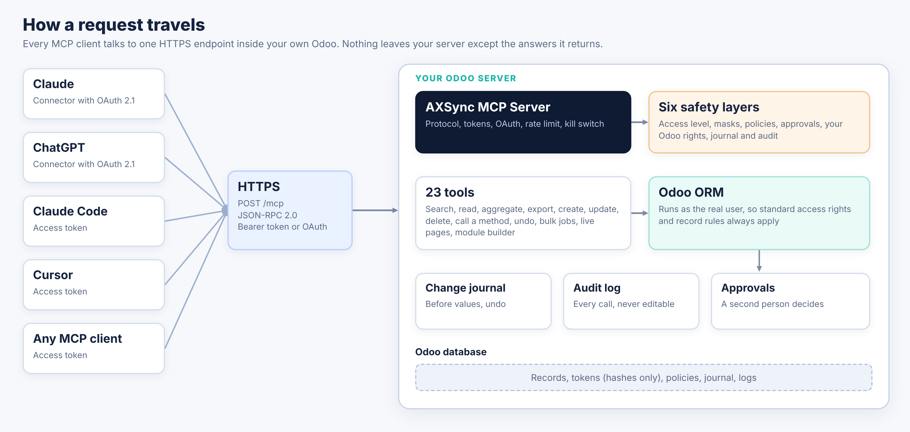
Every client reaches one endpoint. The module sits inside Odoo and the ORM runs as the real user.
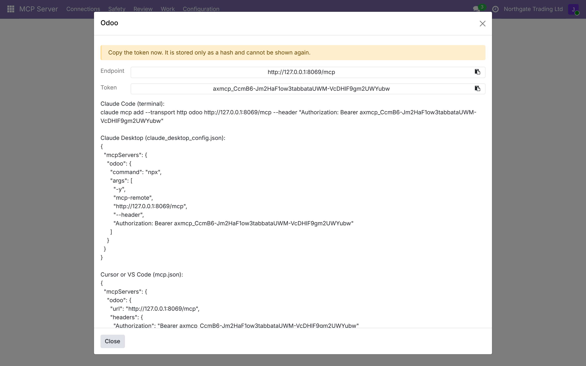
The wizard shows the token once. Odoo keeps only a hash. The token in this screenshot is a demo value and has been revoked.
claude mcp add --transport http odoo https://erp.example.com/mcp --header "Authorization: Bearer axmcp_your_token"
{
"mcpServers": {
"odoo": {
"command": "npx",
"args": ["-y", "mcp-remote", "https://erp.example.com/mcp", "--header", "Authorization: Bearer axmcp_your_token"]
}
}
}
{
"mcpServers": {
"odoo": {
"url": "https://erp.example.com/mcp",
"headers": { "Authorization": "Bearer axmcp_your_token" }
}
}
}
Add a custom connector and enter https://erp.example.com/mcp. The app discovers the sign-in details itself, registers, and sends you to Odoo. Sign in, check the access level shown on the consent screen and press Allow. No token is pasted anywhere. The exact menu names in these apps change from time to time, so check the app's current instructions for custom MCP connectors.
curl -s https://erp.example.com/mcp -H 'Authorization: Bearer axmcp_your_token' -H 'Content-Type: application/json' \
-d '{"jsonrpc":"2.0","id":1,"method":"tools/call","params":{"name":"whoami","arguments":{}}}'
With several databases on one server, add ?db=your_database to the address or use a database filter.
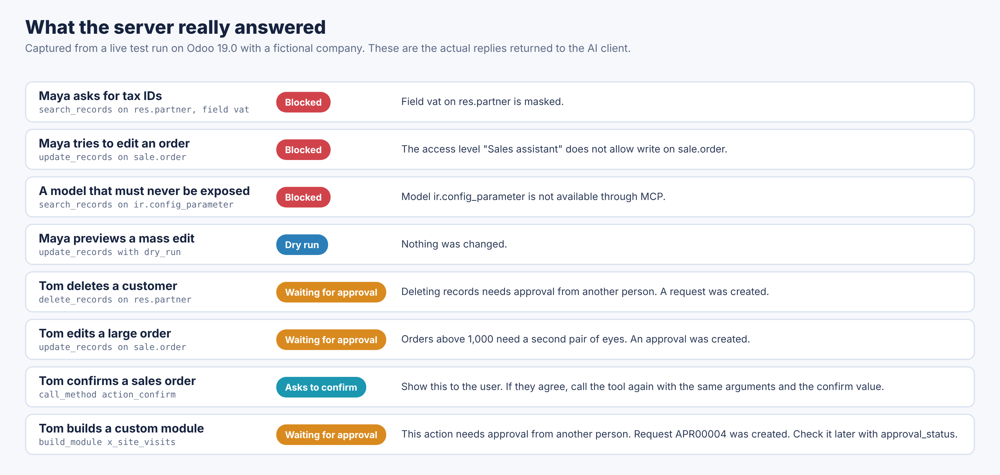
Replies captured from a test run. The server refuses the tax ID, the edit outside the access level and the technical model, and holds the delete, the large order edit and the module build for an approver.
Each layer is enforced on the server. A request that clears all six runs as the Odoo user, is journaled and is logged.
An access level says what a connection may do, regardless of what the Odoo user could do. Read only is the default. A custom level lists models and operations, so a sales assistant can update contacts and read orders, but cannot touch invoices at all.

The Sales assistant level: contacts can be read, created and updated; orders and products can only be read; nothing can be deleted or called.
Policies decide what happens to a call that the access level allows. Combine tool, model, operation, user, group, a record condition and a minimum number of records. The strictest matching policy wins.
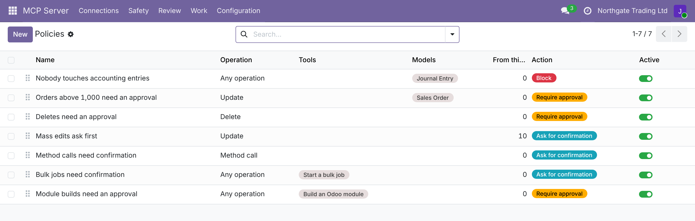
Seven policies from the demo: accounting entries blocked, large orders and deletes held for approval, mass edits and method calls asked first.
| Example | Setting |
|---|---|
| Nobody touches accounting entries | Model: Journal Entry, operation: any, action: block |
| Deletes always need a second person | Operation: delete, action: require approval |
| Large orders need an approval | Model: Sales Order, operation: update, record condition on the amount, action: require approval |
| Mass edits ask first | Operation: update, from 10 records, action: ask for confirmation |
| Only managers may confirm orders | Tool: call a method, model: Sales Order, group: Sales / User, action: require approval |
When a policy requires an approval, the assistant receives a request number and carries on with other work. An approver sees exactly what will run, with the full arguments, and decides in Odoo. The requester cannot approve their own request. On approval, Odoo runs the stored call as the requester, so nothing can be swapped after the decision.
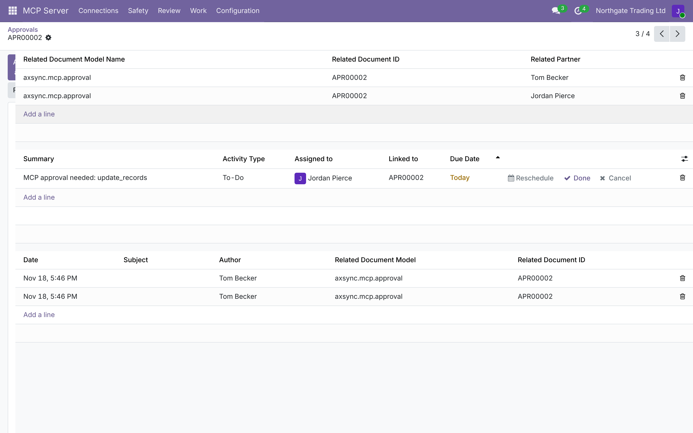
A pending approval for a sales order edit. The arguments are shown exactly as the assistant sent them.

The approval list after the approver has decided on four requests.
Masks work at the source, before data reaches the assistant. Hidden fields do not exist for the assistant: they cannot be read, searched, grouped, ordered, exported or written. Partial masks keep only the ends of a value, hash masks return a stable short hash so the assistant can still compare values.

Three masks from the demo: tax IDs hidden, phones partial, emails hashed. Groups can be excluded from a mask.
Every write stores the old values next to the new ones. Press Undo on a single change or on a whole batch. If someone edited the record after the AI did, undo tells you instead of overwriting their work.
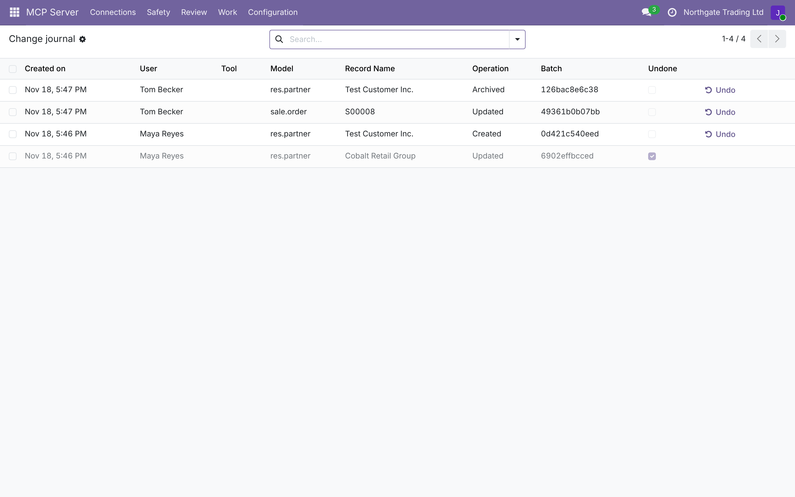
The change journal with before and after values. Undo is one button.
Every call is recorded with the user, the client, the tool, the model, the operation, the number of records, the status and the duration, including calls that were refused. The log is written through its own database cursor, so a rolled-back request still leaves its trace. Filter, group, chart or pivot it like any Odoo list.
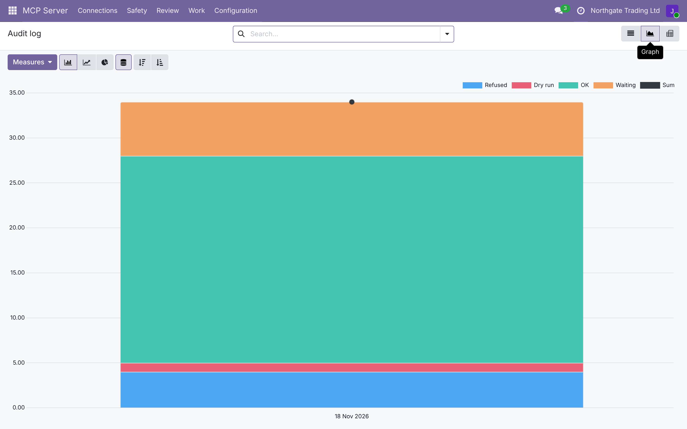
The usage graph groups calls by tool and status.
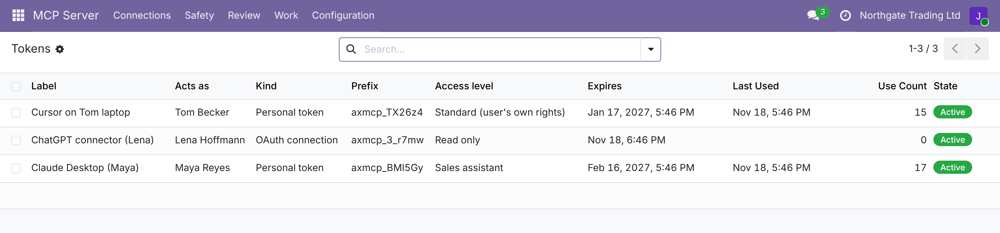
Tokens show a short prefix only. Expiry, last use, use count and status are visible; revoke with one button.
Tokens can be limited to an IP range, given their own access level and expire by default after 90 days. Hosted AI apps use OAuth 2.1:

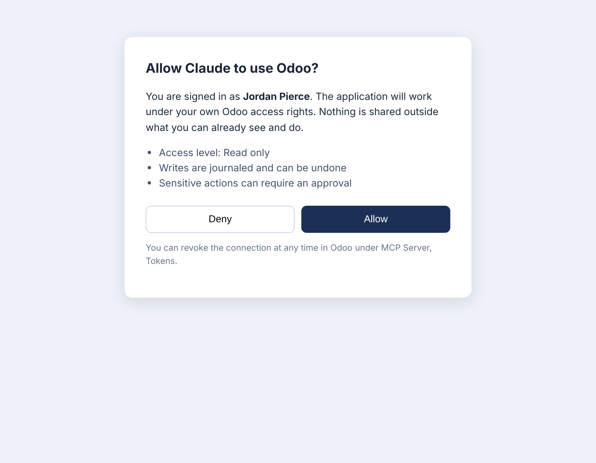
The consent screen shows the app, the Odoo user and the access level the app will receive.
Tell the assistant to update a hundred contacts or archive an old product range. The job runs in the background in batches and can be followed in Odoo.
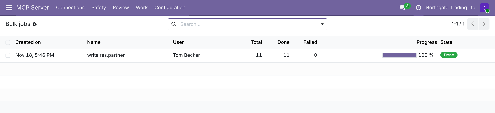
Publish a read-only live page with a table and a bar chart, for example open orders by customer. Pages are private, visible to signed-in users under their own rights, or open to anyone with the link after an approval.
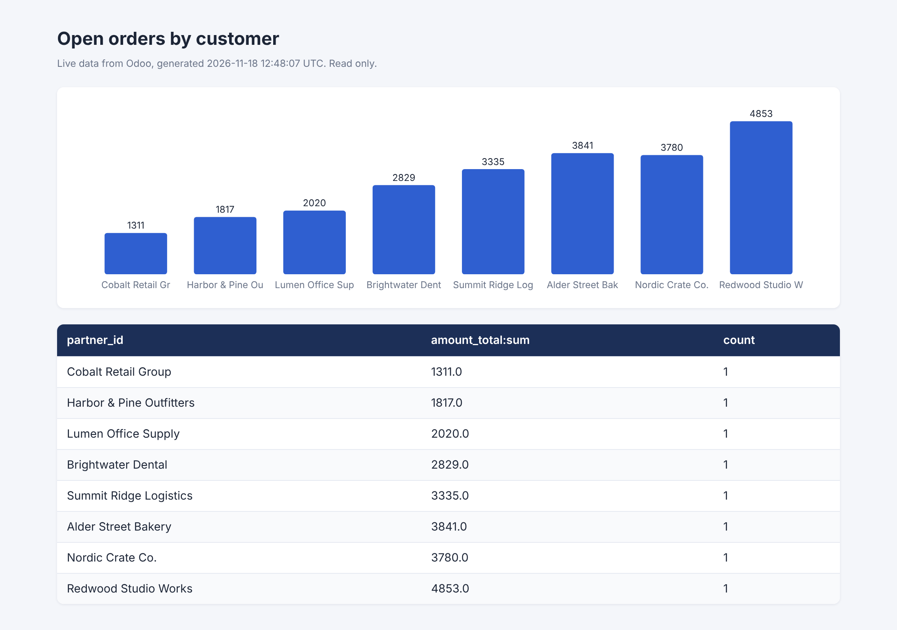
A live page published by the assistant: open orders by customer, with the totals as bars.
CSV exports apply masks, neutralise formulas that start with = + - or @, and download through a one-hour link.
Ask the assistant for a small custom app, for example "log customer site visits with date, customer, notes and status". The module builder validates the specification and returns an installable ZIP for this Odoo version with models, list and form views, a menu and access rights. Nothing is installed on your server. The default policy requires an approval, and you review the ZIP like any other code before you install it.
In our tests the generated module installed cleanly on Odoo 16, 17, 18, 19 and 20.

Settings: kill switch, default access level, limits, retention, OAuth and origins.
The settings page holds the kill switch, the default access level, who may connect, the default for writes without a policy, calls per minute, writes per day, record and text limits, retention for the logs, token and approval lifetimes, the OAuth switch, allowed browser origins and the public base URL.
Streamable HTTP at /mcp with JSON-RPC 2.0, initialize, ping, tools, resources and prompts, batches of up to 20 calls and the three current protocol versions. Clients get a proper 401 with a resource metadata pointer, so they know how to sign in.
Access tokens for developer tools: hashed at rest, shown once, with an expiry, an IP allowlist (single addresses or CIDR ranges), a per-token access level, last used time and use count. OAuth 2.1 with PKCE, dynamic client registration and a consent screen for hosted AI apps. Refresh tokens rotate on every use.
Read only is the default. Full means everything the Odoo user may do. Custom lists the models, the operations (read, create, update, delete, call methods) and the tools one connection may use. Levels can be forced on every connection.
Allow, ask, require approval or block. Rules can filter by tool, model, operation, user, group, a record condition and a minimum record count. When several policies match, the strictest wins.
The request keeps the exact arguments. The requester cannot approve it. An approver presses Approve and run and Odoo executes the stored call as the requester. Requests expire and create activities for approvers.
For "ask" policies the assistant first gets a preview of what would change, nothing is written, and a confirm code bound to the user, the tool and the exact arguments. Change any argument and the code stops working.
Hide a field completely, show only the ends of a value, or replace it with a stable hash. Hidden fields cannot be read, searched, grouped, ordered, exported or described. Default masking catches fields named like passwords, tokens and keys.
Every create, update and delete stores the old values. Undo a single change or a whole batch. If the record changed in the meantime, undo says so instead of overwriting.
Records with an active flag are archived, not removed. Other records are deleted only in draft or cancelled states. Posted and confirmed documents are refused.
Every call is recorded, including refusals: user, client, tool, model, operation, record count, status, duration. Written through a separate cursor so a rolled-back transaction cannot erase it. List, graph and pivot views included.
Search with domains and date macros, count, read by id, group and total with date granularity, find by name, CSV export of up to 10000 records with a formula-injection guard.
Call public business methods such as action_confirm. Private methods and the generic write, create and unlink are refused. The default policy asks for confirmation first.
Update or archive thousands of records in the background in batches of 200. The record set is fixed at the start, progress is visible in Odoo and through the job_status tool.
The assistant can publish a read-only page with a table and a bar chart from a query. Private, signed-in or link access; link pages always need an approval and an expiry.
Describe a custom model in a sentence and receive an installable module ZIP for your Odoo version: model, fields, views, menu and access rights. Nothing is installed automatically.
Kill switch, rate limit per minute, daily write quota, maximum records per call, text size limit, allowed browser origins, retention for logs, and a one-click revoke for every token and OAuth connection.
Generates the endpoint, the token and ready-to-paste snippets for Claude Code, Claude Desktop, Cursor and curl.
Built-in help, model list and per-model schema resources, and five default prompts that you can edit or extend.
Assistants discover these automatically. Which ones a connection can use depends on its access level and on the tool switches in Configuration.
| Tool | Kind | What it does |
|---|---|---|
whoami | read | Show the Odoo user, company, access level, limits and server version this connection uses. Call this first. |
list_models | read | List the models the user can read, optionally filtered by a text query on name or technical name. |
describe_model | read | Return the fields of a model with type, label, required flag, relation, selection values and whether the field is masked, plus the operations this connection may run on it. |
search_records | read | Search and read records of a model. Returns at most the configured maximum per call; use offset to page. |
count_records | read | Count the records matching a domain. |
read_records | read | Read specific records by id. |
aggregate | read | Group records and compute totals, for example group_by ["partner_id"] with measures ["amount_total:sum"]. Date fields accept a granularity: "date_order:month". |
name_search | read | Find records by display name, the way an Odoo many2one field does. |
export_records | read | Export up to 10000 records to a CSV file and return a download link. Masks apply. |
create_records | write | Create one or more records. Every record is written to the change journal and can be undone. |
update_records | write | Update records selected by ids or by a domain. Old and new values are journaled so the change can be undone. |
delete_records | write | Delete records. Records with an active flag are archived (and can be restored with undo_change). Others are removed only when they are in a draft or cancelled state. Posted or confirmed documents are refused. |
call_method | write | Call a public method on records, for example action_confirm on sale.order. Private methods and generic write, create and unlink are refused. Methods cannot be rolled back, so there is no dry run and the default policy asks for confirmation. |
undo_change | write | Undo a journaled change by journal id or by batch id. Refused when the record changed since. |
list_changes | read | List recent changes made through MCP by this user, newest first. |
approval_status | read | Check the state of an approval request raised by a previous call. |
list_approvals | read | List this user's approval requests. |
start_bulk_job | write | Update or archive many records in batches in the background. The record set is fixed when the job starts. Use job_status to follow it. |
job_status | read | Progress of a bulk job. |
publish_page | write | Publish a read-only live page (table with optional bar chart) built from a query. Modes: private (owner only), login (any signed in user, shown with their own rights) and link (anyone with the link, always needs an approval). |
list_pages | read | List the live pages published by this user. |
unpublish_page | write | Take a live page offline. |
build_module | admin | Generate a small installable Odoo module (models, fields, list and form views, menu, access rights) from a specification and return a ZIP download link. Nothing is installed on this server. Models must be named like x_something or vendor.thing. |
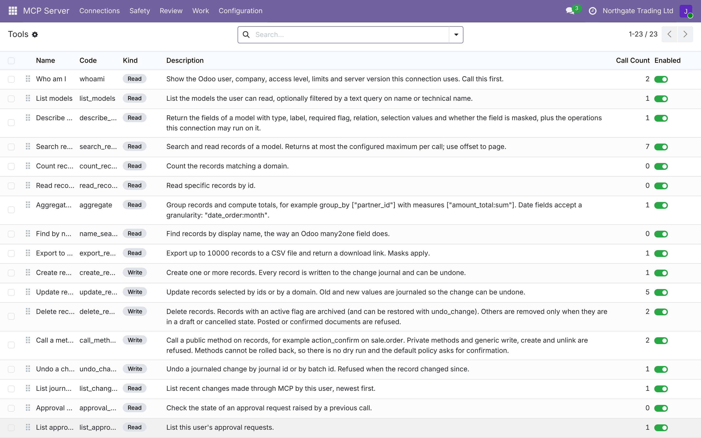
Every tool can be switched off in Configuration.
Read-only first, writes by rule, risky actions by approval.
Masks and access levels keep tax numbers, phones and emails out of prompts.
A journal with undo and an audit log that cannot be edited.
Ask for totals, lists and charts in plain language and publish them as live pages.
Preview, confirm and run bulk updates in the background.
Standard groups, activities, cron jobs and views. No external service and no extra library.
ir.*, base.*, API keys, mail queue, settings, the module's own log and token tables) are not reachable through MCP. Users, groups and similar models are read only.| Odoo version | 19.0 only. Separate builds exist for 16, 17, 18, 19 and 20. |
|---|---|
| Required Odoo apps | Base, web and Discuss (mail). Works with any other application. |
| Python libraries | None beyond Odoo itself. |
| Hosting | Self-hosted and Odoo.sh. Odoo Online (SaaS) does not allow custom modules and is not supported. |
| Network | Public HTTPS for hosted AI apps. A private address is enough for tools running on your own machine. |
| Testing | An automated test suite (engine and HTTP, including a full OAuth flow) runs on Odoo 19.0, and the interface was checked in a browser against a live demo database. A scripted client made 29 real MCP calls against the running server. |
| Data and services | No external services. Everything is stored in your database. |
Only within the access level of the connection. After installation the default level is Read only. Writing needs a level that allows it, and policies can still ask or require an approval.
Any client that speaks MCP over Streamable HTTP: Claude, ChatGPT custom connectors, Claude Code, Claude Desktop (through mcp-remote), Cursor, VS Code and others. Hosted apps use OAuth; developer tools use a token.
The module itself calls nothing external. The answers to the assistant's requests go to the AI service you use, so use access levels and masks to limit what it can see.
Only if the access level allows it. A block policy on Journal Entry takes a minute to create and is shown in the Policies section above. Posted documents cannot be deleted through the module.
Every write is journaled. Open the change journal, press Undo, or ask the assistant to call undo_change. Method calls are not undoable, which is why they ask for confirmation by default.
No. The approver must be a different person with the MCP Approver group.
Only as a SHA-256 hash. The token is shown once when it is created. A lost token must be replaced.
Yes. Add the module like any custom module. Odoo Online (SaaS) does not allow custom modules, so it is not supported.
For hosted AI apps, yes: they must reach your /mcp address over HTTPS. For Claude Code, Cursor and similar tools running on your machine, a private address or a VPN is enough.
The assistant works as the Odoo user, so it sees the companies that user can see and Odoo's multi-company rules apply.
Untick Server enabled in the settings. The endpoint answers 503 at once. You can also revoke a single token or connection.
Email hunain@axsync.com or use the Contact the Author option on this Odoo Apps Store page.
Published by AXSync
Website: www.axsync.com
Support email: hunain@axsync.com
Please include your Odoo version, the module version, the AI client you use and what you expected to see. Screenshots help.
This module is published by AXSync and is not an official Odoo product. Odoo is a trademark of Odoo S.A. Claude, ChatGPT, Cursor and other names are trademarks of their owners and are used only to describe compatibility with the open Model Context Protocol.
Install MCP Server for Odoo and connect your first assistant in minutes.
www.axsync.com